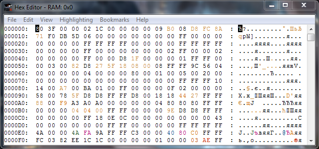
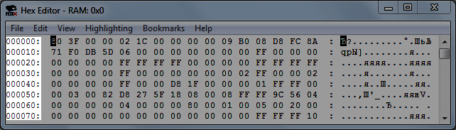
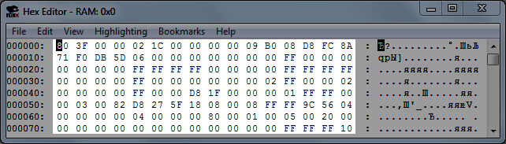
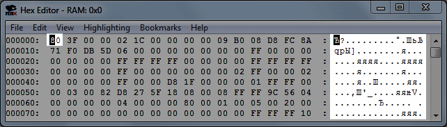
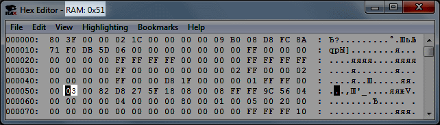
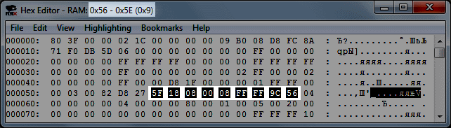
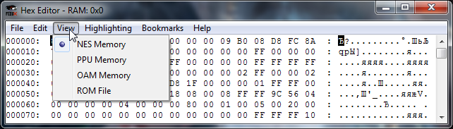

Содержание
Окно открывается в Debug -> Hex Editor, или горячей клавишей. Если ROM не запущен в эмуляторе, окно открыть не получится. Окно автоматически закрывается при закрытии ROM'а.

По умолчанию открыто View -> NES Memory. Окно можно растянуть мышкой по размеру, и перемещаться по нему при помощи стрелок на клавиатуре или колесом мышки (как в браузере).
Слева находятся начальные адреса строки.

В середине в каждой строке по 16 адресов, в каждом адресе 1 байт. Переменные в адресах при запуске ROM'а зависят от опции эмулятора Config -> RAM Init.

Справа отображена кодировка байтов, по умолчанию ASCII. Кодировку можно изменить, подготовив .tbl файл и подгрузив его через File -> Load *.TBL File. Выбранный байт подсвечивается и в кодировке справа.

Выбранный адрес отображается в названии окна (без лишних нулей слева и с префиксом 0x), а также указан тип памяти этого адреса, в зависимости от режима вкладки View и самого адреса.

При выделении мышкой сразу нескольких адресов, в названии окна будет указан выделенный диапазон адресов, а также шестнадцатеричное количество выделенных байтов.

Можно переключиться на 4 разных режима.

Здесь расположена память процессора. Включает в себя RAM, регистры, батарейку (при ее наличии) и память ROM'а, подгруженную из ROM File. Размер окна $0000-$FFFF.
Здесь расположена память видеопроцессора. Включает в себя графику фона и спрайтов, атрибуты фона и палитру. Размер окна $0000-$3FFF.
Здесь расположена память спрайтов. Включает в себя копию данных всех 64 спрайтов из NES Memory, обычно из адресов $0200-$02FF. Размер окна минимум $0000-$00FF, дальнейшее увеличение окна лишь отображает копию $0000-$00FF.
Здесь расположены байты из ROM'а. ROM File является аналогией открытия ROM'а в любом другом Hex-редакторе. Включает в себя хедер, память PRG ROM и CHR ROM (при наличии). При отсутствии CHR ROM, последние 8 килобайт отображают копию $0000-$01FF из PPU Memory. Размер окна зависит от размера ROM'а и наличия CHR.
Для примера будет использоваться игра Battle City (J) [!].nes. Запусти игру, затем в эмуляторе нажми Debug -> Hex Editor.
Окно отображает данные игры на данный момент. Данные обновляется 1 раз за кадр.
В этой вкладке можно переключаться на 4 разных режима.
Это память процессора. Здесь находится
Адреса $0200-$07FF представляют собой одинаковую ценность, поэтому игры обычно хранят здесь что-то второстепенное. В Battle City музыка находится в $0300-$03FF, а $0400-$07FF это данные уровня (кирпичи, вода и все остальное).
$0000-$07FF - основная RAM. Дальше идут 3 зеркала $0800-$1FFF. Например, у адреса $0000 есть 3 зеркала - $0800, $1000 и $1800. Если что-то записать в основной адрес, это отобразится в зеркалах, и наоборот. Но тебе предстоит работать только с оригиналом.
Это видеопамять. Здесь находится графика, атрибуты фона и палитра. Процессор общается с видеопамятью через регистры, что позволяет ему считывать и записывать байты.
Это память спрайтов. Здесь показаны данные для каждого из 64-х спрайтов. Технически память спрайтов находится в RAM, а это окно лишь отображает именно ту область RAM, которая отвечает за память спрайтов.
Размер памяти спрайтов в этом окне $0000-$00FF, а все что ниже лишь зеркала (копии).
Память ROM'а. Здесь показан ROM, как если бы ты открыл его в любом другом Hex-редакторе. Здесь находится хедер, Аналогично тому, что ты откроешь игру в любом другом Hex-редакторе. За исключением самой первой строчки, любые другие байты можно изменять в реальном времени, внося изменения в код игры и в другие данные.
Нет. Изменяя байты в RAM, ты делаешь лишь временные изменения.
Чтобы сохранить свои изменения, потребуется сделать хак игры, то есть отредактировать код таким образом, чтобы он вносил нужные тебе изменения в RAM.
Здесь приведены некоторые игровые адреса,
Существует несколько способов поиска адресов, которые будут описаны в отдельной статье.
Пока что можешь попробовать поискать адреса просто наблюдая за RAM.